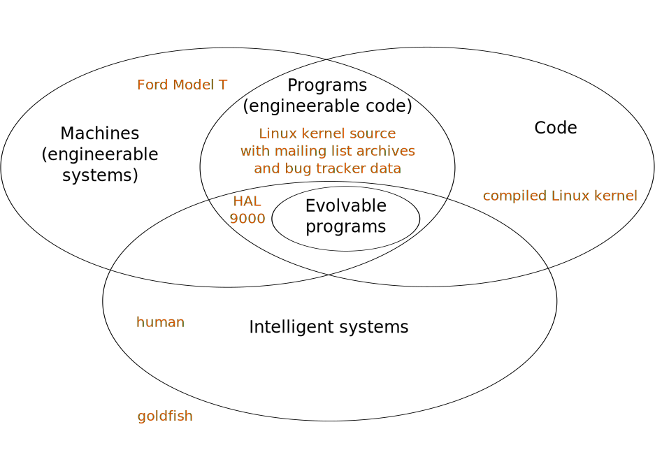

Artificial general intelligence (AGI) has yet to be achieved. Can the core of an AGI architecture be based on evolvable code made up of a rich set instructions similar to those found in programming languages, possibly Push? This would save us the task of architecting most of the AGI system ourselves, as long as we come up with basic rules that result in fast evolution. Based on looking at the engineerability of programs and the lack of engineerability of their obfuscated equivalents, we reach the conclusion that fast evolution of programs can only be done by engineers. Given our definition of evolution, such engineer would have to be embedded in the system itself.
A common view of computer systems is that the hardware and the operating system (OS) provide an environment in which a program can be executed. A running program is called a process. A process obtains some data from the OS (input), produces and modifies its own data, and can pass some data to the OS (output). The instructions of the program executed by the OS are referred to as code. Here we consider the possibility of code to be treated as data, i.e. the OS would let the process inspect, modify, and reload parts of its own program.
So what would it take for a program to modify itself and become better at accomplishing certain goals?
The hope is that mutating instructions of a program tree can be done much faster than what a human programmer would do, and running and testing the new code could be done right away. However, arbitrary insertion or deletion of instructions taken with fixed probabilities from the same set faces a combinatorial explosion problem similar to the infinite monkey. The question is not whether evolution can result in an intelligent system, but how fast.
We need a system that can modify its presumably large code base in ways that require a quasi-constant amount of time to develop each new feature. In other words, the program needs to be structured such that the programmer knows how to find the few parts of the program to modify and how to modify them so as to guarantee a constant chance of success. An example of goals, for a human programmer of some interactive software, is to “change the color of the form submission button to the same color as the other buttons” or “filter out search results older than 10 days”. While these tasks seem like trivial modifications of an existing program for a competent software engineer, it is not obvious at all how to specify those goals to an unintelligent system and have it succeed in a few attempts. Such a task requires:
Even if the testing steps (3, 4) were provided to the system and step (4) resulted in some numeric feedback on how well the job was done, even if understanding the goal (1) now seems unnecessary, the system still needs to modify the program, and has no clue of how to do so. Even if a mutation-test cycle were very fast, this dramatically differs from how a software engineer would work. A software engineer, after understanding the problem, would gather the different pieces of information needed to solve the problem. In the case of changing the color of the form submission button, the programmer would need to answer the following questions:
Those are 7 pieces of information. All of those need to be known eventually. This starts to look like a really difficult task for a system that cannot understand a program.
Maybe our system is not intelligent like a software engineer, but it can inspect the structure of the program without having to understand English. After all, all the code needed to run this program is available, and maybe a library of useful functions is given too. In order to figure this out, let’s pretend that the human engineer doesn’t understand English. The program is obfuscated, i.e. comments are removed and all the identifiers used in the program are now meaningless (x1, x2, …). Can the human engineer understand what the program does? How long does it take them to understand that x3583 stands for the field red, x780 is the function for creating a button, and its third argument is the constant X4522 that indicates that it is form submission button? All of that without even a list of what the original English names for each identifier might be. Such reverse engineering can require tremendous work, and it involves a lot more effort, time, and intelligence than reading a program that was not obfuscated. This is the difference between a program and just code. A program is code that can readily be engineered, i.e. can be modified locally to implement a certain feature without requiring a global analysis.
A program does not exist without a programmer, as it is a set of executable instructions documented with meaningful identifiers and comments written in the programmer’s natural language and referring to acquired concepts. These are instructions for programmers with some shared knowledge.
Given how hard it is to figure out the behavior of a program only by looking at its structure, even if the program was written with that goal in mind, I postulate that fast code modification requires a system of annotations via identifiers, comments, or equivalent, and this requires intelligence.
In conclusion, we shall emphasize that machines contrast with evolvable systems that don’t use any intelligence for evolution. Evolvable systems that do use their intelligence to modify and improve their own intelligence are a possibility. This would likely arise in non-biological machines sooner than in humans, due to the non-engineerability of the human brain.
system: anything that can read data from the environment (its input) and produce an effect on the environment (its output).
evolvable system: given a clonable system, it is said that it evolves when it changes the way it processes its input over time, and specific changes cannot be triggered from outside by imposing a particular input.
engineerable: property of systems that can be modified permanently by one or more external operators (engineers) to achieve certain goals.
machine: engineerable system.
code: instructions sufficient for defining how a system processes its input.
program: engineerable code.
intelligence: ability for a system to set, maintain, and achieve goals.
